Estofados em Goiânia
Sofás e divãs
para ficar bem.
Sofás de canto, capitonê e poltronas.
Escolha uma referência do portfólio
e converse sobre a sua peça.
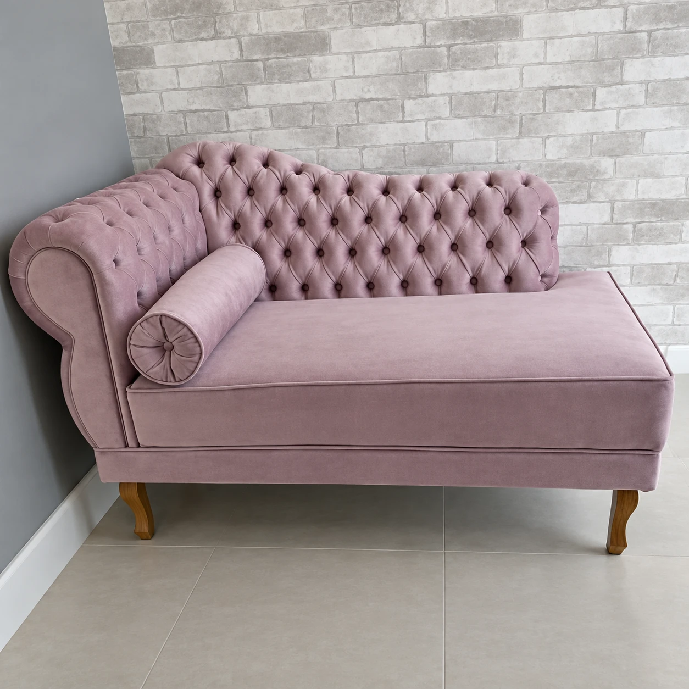
Do sofá de canto
à cabeceira do quarto.
A Estofados Coutinho trabalha com sofás sob medida, poltronas, cabeceiras e reforma de estofados em Goiânia. Peças para os momentos de pausa e para a vida que acontece em casa.
O conforto, do seu jeito
Encontre a sua peça.
Dez referências reais de sofás,
poltronas, cabeceiras e reforma.

Divã lilás com capitonê
Divã com capitonê
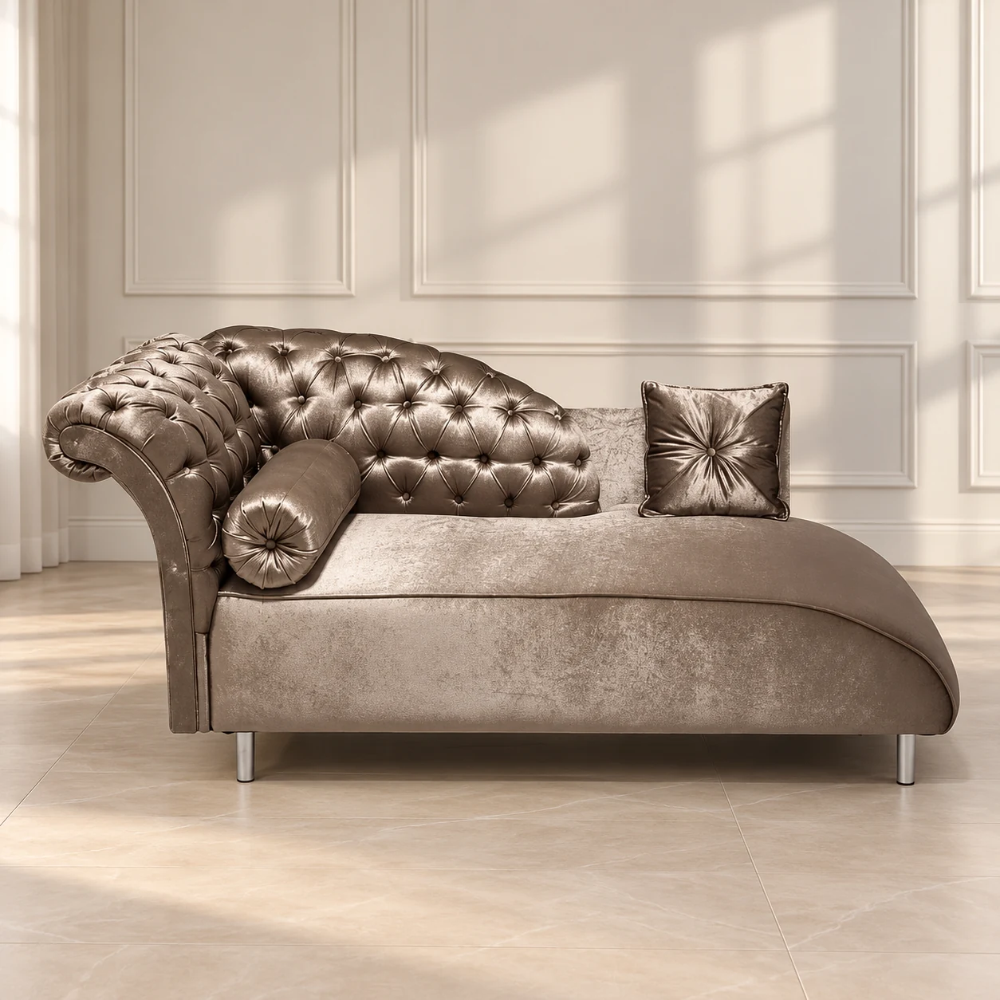
Divã claro com capitonê
Divã com almofadasAmbientação com IAVer original

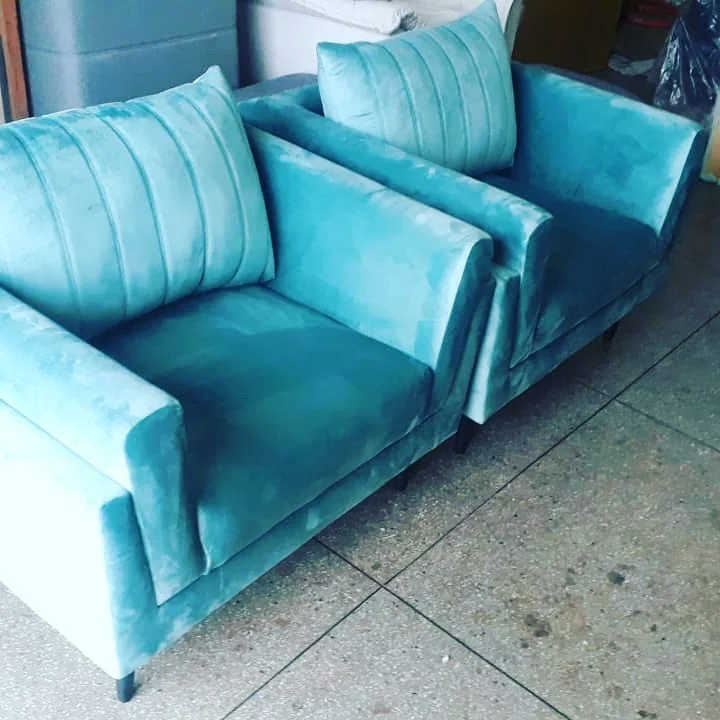
Detalhe das poltronas azuis
Poltronas azuis
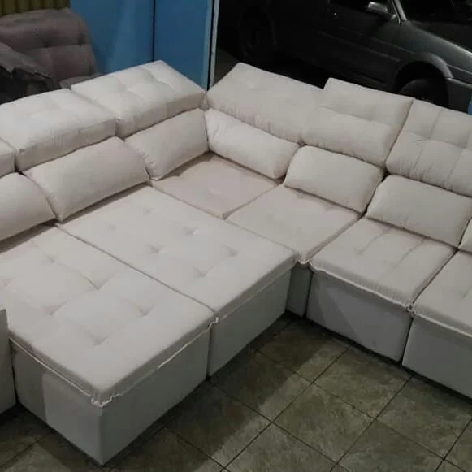
Assentos do sofá de canto
Sofá de canto
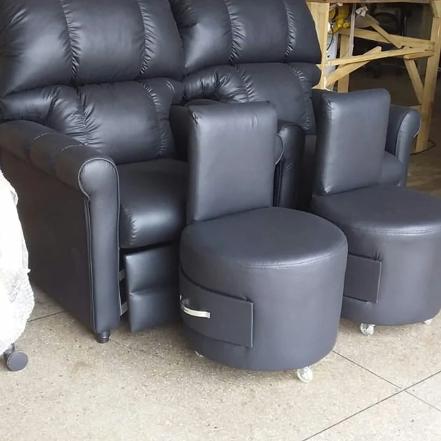
Poltronas e puffs, de perto
Poltronas e puffs
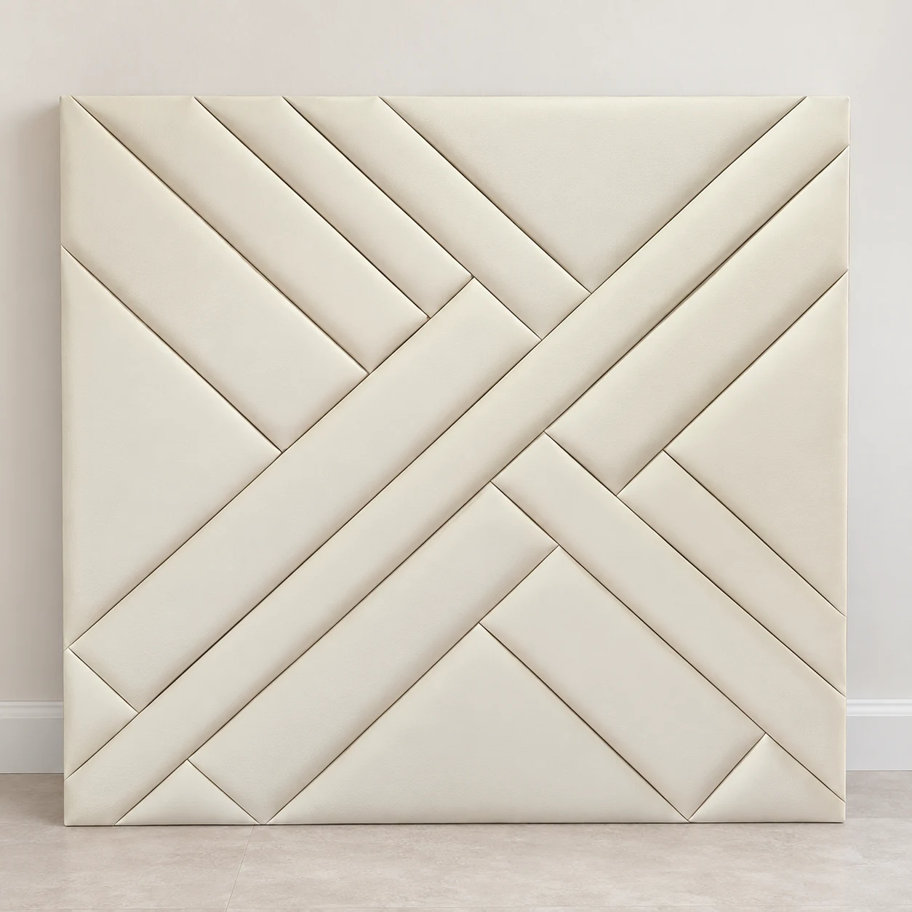
Cabeceira com faixas diagonais
Cabeceira estofadaAmbientação com IAVer original

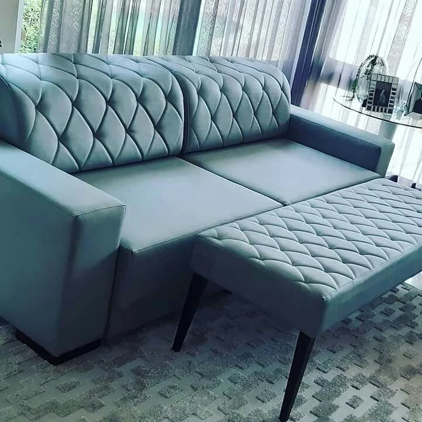
Sofá e banco com capitonê
Conjunto em tom cinzaBraços retos no sofá, capitonê no encosto e um banco estofado que acompanha o conjunto.

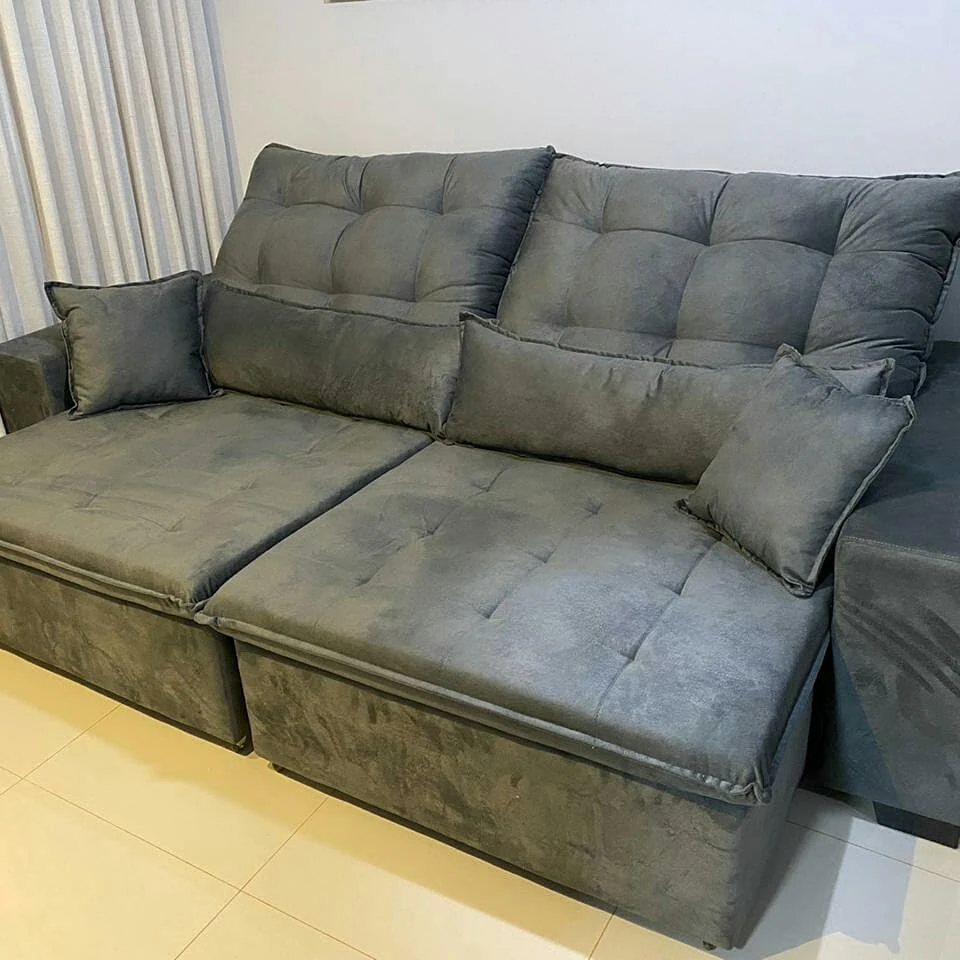
Sofá retrátil cinza
Sofá retrátil e reclinávelDois assentos amplos, encostos segmentados e almofadas. Veja o registro completo para comparar a composição.

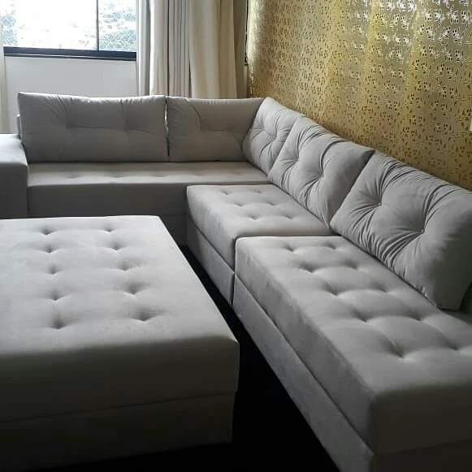
Reforma de sofá de canto
Referência de reformaRegistro publicado como reforma: sofá de canto claro acompanhado de um puff estofado.

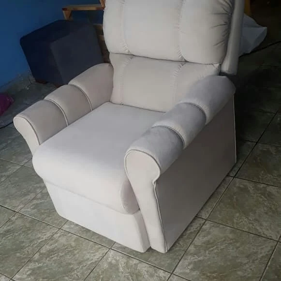
Poltrona clara: braços e encosto
Poltrona de encosto altoEncosto alto, braços acolchoados e tom claro. Uma referência para conversar sobre a sua poltrona.
As imagens apresentam trabalhos do portfólio.
Converse com a equipe sobre modelos, tecidos e medidas.
Um detalhe muda o clima
Às vezes,
o conforto
tem cor.
Neutro, suave ou cheio de presença. O tecido também conta um pouco de quem mora ali.
Compartilhe sua ideia
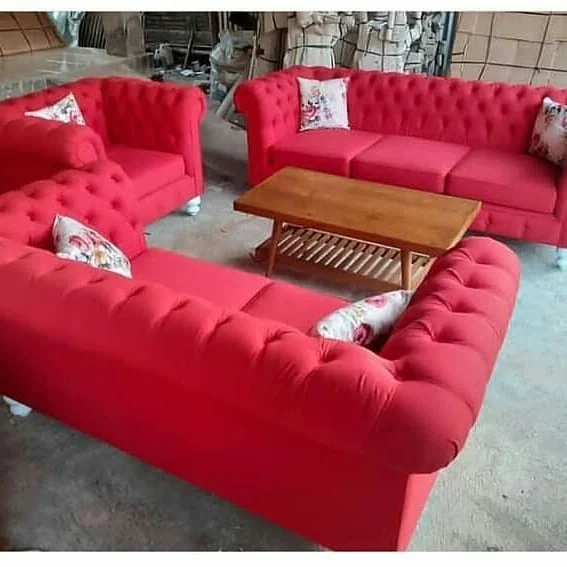
Reforma de estofados
Uma nova fase
para o seu móvel.
Tem uma peça que já faz parte da sua casa? Fale sobre a reforma do estofado e as possibilidades para continuar essa história.
Para começar a conversa
Mostre a sua peça
Fotografe o móvel inteiro e os detalhes que você gostaria de renovar. Compartilhe as imagens com a equipe pelo Instagram.
Conte o que imagina
Uma nova cor, outra textura, mais conforto. Conte o que você espera para que a equipe possa orientar as possibilidades.
Converse sobre as medidas
As dimensões da peça e do ambiente ajudam a entender a sua necessidade. Confirme os detalhes diretamente com a equipe.
Pode chegar
Vamos deixar sua casa
mais à vontade?
Fale com a Coutinho no Instagram Goiânia, Goiás
Vamos encontrar o seu conforto?
Escolha a peça ou conte o que gostaria de renovar. Prepare um pedido com a sua ideia.